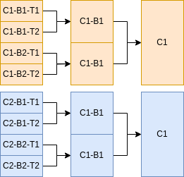

Hich Configuration Basics
Running Hich
This command executes a stub run of a preconfigured vignette. A stub run, specified below with -stub-run, downloads containers and stages references if needed, but no further processing. Instead, it executes a stub section of each process. This quickly confirms which processes will be run.
nextflow run contents/main.nf -stub-run --sampleFile vignettes/akgol2021/one_rep_bwa.tsv -params-file params/onerep_bulk.yml -profile localPC
Here, `nextflow run contents/main.nf` runs Hich. The --sampleFile option specifies a file containing input files and parameters for each individual sample. The -params-file option loads options from a YAML file that offers more comprehensive control over default and integrative sample processing, such as aggregation and feature calling. The -profile option adapts the run to use resources appropriate to the machine, with different profiles specified in nextflow.config.
The --sampleFile option
This is a simple example of a sample file, which can be found in vignettes/akgol2021/one_rep_bwa.tsv. The experimental condition is labeled in condition. We will demonstrate using techrep and biorep columns for factorial designs later. The two input fastq files are listed at fastq and fastq2. The assembly, aligner and restrictionEnzymes are specified as well. Hich can automatically download the genome reference for hg38 and several other commonly-used references from the NCBI database and use it to produce a chromsizes file, aligner index, and fragment index. These will be hard linked in the resources subdirectory and can be reused for other projects.
condition |
fastq1 |
fastq2 |
assembly |
aligner |
restrictionEnzymes |
|---|---|---|---|---|---|
Formaldehyde+DSG_DdeI_and_DpnII_HFFc6 |
vignettes/akgol2021/downsampled/Formaldehyde+DSG_DdeI_and_DpnII_HFFc6_BR1_TR1_R1.fastq.gz |
vignettes/akgol2021/downsampled/Formaldehyde+DSG_DdeI_and_DpnII_HFFc6_BR1_TR1_R2.fastq.gz |
hg38 |
bwa |
DdeI,DpnII |
If required resource files are already available, they can be specified in the sample file as well, although the assembly and restrictionEnzymes parameters should still be specified.
genomeReference |
chromsizes |
aligner |
alignerIndexDir |
alignerIndexPrefix |
fragmentIndex |
|---|---|---|---|---|---|
resources/hich/genomeReference/GRCh38_no_alt_analysis_set_GCA_000001405.15.fasta.gz |
resources/hich/chromsizes/hg38.sizes |
bwa |
resources/hich/bwa/bwa/index |
hg38 |
resources/hich/fragmentIndex/hg38_DdeI_DpnII.bed |
The -params-file option
The -params-file is a YAML file for configuring default attribute values applying to all samples, as well as how to aggregate and call features on samples. Hich provides several preconfigured YAML files for different purposes in the params subdirectory. Parameters can be specified in the -params-file to control sample aggregation, including downsampling, merging and deduplication.
The default section specifies sample attributes that will be applied unless overridden by a column of the same name in the sample file.
defaults:
techrep: "1"
biorep: "1"
minMapq: 30
aligner: "bwa-mem2"
bwaFlags: ["-SP5M"]
reshapeParams: []
globalDefaultReshapeToCellID:
- option: "--regex"
pattern: "^(.*?):.*"
group: 1
pairtoolsParse2Params:
- "--drop-readid"
- "--drop-seq"
- "--drop-sam"
pairtoolsDedupParams: []
pairtoolsSelectParams: []
pairtoolsSelectFilters:
keepPairTypes: ["UU", "RU", "UR"]
keepTrans: true
keepCis: true
minDistFR: 1000
minDistRF: 1000
minDistFF: 1000
minDistRR: 1000
discardSingleFrag: true
matrix:
makeMcoolFileFormat: true
makeHicFileFormat: true
resolutions: [1000, 2000, 5000, 10000, 20000, 50000, 100000, 200000, 500000, 1000000]
juicerToolsPreParams: []
coolerCloadParams: ["--chrom1 2", "--pos1 3", "--chrom2 4", "--pos2 5"]
coolerZoomifyParams: ["--balance", "--balance-args '--max-iters 2000 --trans-only'"]
Samples can be downsampled, merged and deduplicated using the aggregate block. Here, fullCoverageDedup is the name of a simple aggregate profile that deduplicates samples, merging as in the workflow diagram above. No downsampling or merging occurs. Multiple and more complex aggregate profiles can be created and each sample it applies to will be cloned and labeled with the aggregate profile as well as its condition, biorep and techrep.
aggregate:
fullCoverageDedup:
dedupMaxMismatch: 3
dedupMethod: "max"
techrepDedup: true
mergeTechrepToBiorep: true
mergeBiorepToCondition: true
Multiple samples can be specified for different conditions, biological and technical replicates. Below is part of a demo sample file which specifies 8 samples. The fullCoverageDedup aggregate profile will merge them as in the workflow diagram.
|
 |
Some Hich features involve combinatorial comparisons between samples or feature calling parameters. To focus the comparisons on those most useful for the analysis, Hich allows defining sample selection strategies. These are given names, like demo_strategy below. Under the name of the sample selection strategy, keys (like condition) specify the name of sample attributes and values (like ["Condition1", "Condition2"]) specify the set of acceptable values the sample must have to match that sample selection strategy. In this case, the sample’s condition must be either "Condition1" or "Condition2".
sampleSelectionStrategies:
demo_strategy:
condition: ["Condition1", "Condition2"]
One of Hich’s features is to call compartments. Compartment-calling profiles can be set up in the compartments block. You can see a default profile to call them at 10kb resolution. Only samples matching demo_strategy will be used for this profile.
compartments:
hich_compartments_default:
sampleSelectionStrategy: "demo_strategy"
resolution: 10000
The -profile option and nextflow.config
Using a container management system, such as docker, singularity or apptainer, is critical for Hich. Nextflow supports many container management systems. Your institution’s computational infrastructure may have a container management system pre-installed. Whichever container management system is to be used can be enabled in the nextflow.config file. Config parameters not typically expected to change between runs of Hich are also specified in nextflow.config.
apptainer.enabled = true
The general section of the nextflow.config file specifies the location of containers necessary for Hich to run on Docker Hub. The necessary container files will be automatically downloaded and converted to the required container management system as Hich runs. The directories where Hich outputs will be published are specified in the publish subsection. Hich produces read-level MultiQC reports after certain processing steps specified in qcAfter. The sampleFileSep param controls the csv separator for the sample file. The humidDefault parameter is used during humid runs, where input fastq files are automatically downsampled to this number of reads prior to alignment to facilitate running the processing steps on a small input.
params {
sampleFileSep = "\t"
humidDefault = 100000
general {
hichContainer = "bskubi/hich:latest"
chromsizesContainer = "quay.io/biocontainers/ucsc-fasize:332--0"
mustacheContainer = "bskubi/mustache:latest"
juicerContainer = "bskubi/juicer_tools:1.22.01"
hictkContainer = "ghcr.io/paulsengroup/hictk:1.0.0"
publish {
mode = "link"
genomeReference = "resources/hich/genomeReference"
chromsizes = "resources/hich/chromsizes"
bwaMem2Index = "resources/hich/bwa-mem2"
bwaIndex = "resources/hich/bwa"
bsboltIndex = "resources/hich/bsbolt"
fragmentIndex = "resources/hich/fragmentIndex"
align = "results/align"
parse = "results/pairs/parse"
dedup = "results/pairs/dedup"
mcool = "results/matrix/mcool"
hic = "results/matrix/hic"
pairStats = "results/pairStats"
qc = "results/qc"
}
qcAfter = ["parse",
"ingestPairs",
"tagRestrictionFragments",
"deduplicate",
"select"]
}
}
Multiple resource profiles are defined as well. Nextflow does not actually monitor CPU or RAM usage by processes. Instead, an estimate is manually made of process resource requirements and Nextflow will ensure this estimate does not exceed the maximum specified for the profile.
profiles {
localPC {
executor.name = "local"
executor.cpus = 10
executor.memory = 20.GB
process.executor = "local"
process {
withLabel: whenLocal_allConsuming {
maxForks = 1
cpus = 10
memory = 20.GB
}
withLabel: smallResource {
cpus = 8
memory = 8.GB
}
withLabel: pairs {
cpus = 8
memory = 8.GB
}
withLabel: createMatrix {
cpus = 10
memory = 16.GB
}
withLabel: convertMcoolToHic {
cpus = 10
memory = 20.GB
}
withLabel: convertHicToMcool {
cpus = 2
memory = 20.GB
}
withLabel: features {
cpus = 5
memory = 10.GB
}
}
}